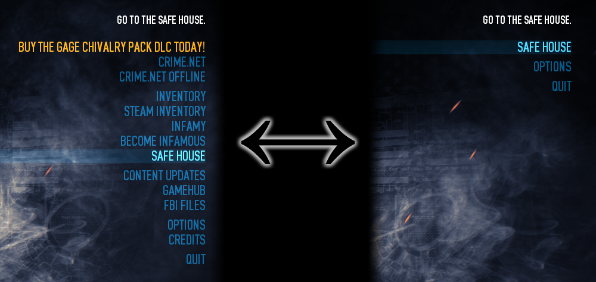

About
This mod enables you to streamline the game's main menu (and its submenus) by hiding unnecessary or potentially dangerous entries such as the DLC advertisement and Clear Progress entries, respectively. It is fully customizable, and entries that are hidden are invisible and cannot be accessed by the cursor (arrow) keys either, so there will be no hindrance whatsoever to keyboard navigation.
Preview

Usage
- Install the mod as with any other BLT mod and start the game once, then quit upon reaching the main menu. This will allow the mod to generate a list of menu node entries (
mods/saves/mmstreamline_nodeconfig.lua) that correspond to your version of the game. -
Open the resulting
mods/saves/mmstreamline_nodeconfig.luafile in a text editor of your choice (preferably not Windows Notepad nor Wordpad), and remove the comment markers (i.e.--) that precede the entry you wish to hide. For example, to hide the Clear Progress entry, look for:-- CLEAR PROGRESS -- clear_progress = trueAnd change it to:
-- CLEAR PROGRESS clear_progress = true - After you have made the desired changes, save the file and start the game to test your changes. If all goes well, the entries should have vanished.
Notes and limitations
- The preview screenshot merely illustrates the extent to which you can customize the menu; you most certainly are not required to go to that level of extremity (unless you so desire)
- The DLC advertisement entry is hidden by default (change
MainMenuStreamliner.HideDLCAdstofalseinmods/saves/mmstreamline_nodeconfig.luato reverse this) - No other menu entries are hidden by default, you will need to edit
mods/saves/mmstreamline_nodeconfig.luato hide other entries - If the mod does not seem to be working, you may have inadvertently introduced a syntax error to
mods/saves/mmstreamline_nodeconfig.lua, check the BLT logs for details on what went wrong - Configure
mods/saves/mmstreamline_nodeconfig.luageneration options indumpmenunodes.lua - There are no in-game options for this mod
- There is no support for re-ordering menu entries
- If you have messed
mods/saves/mmstreamline_nodeconfig.luaup and wish to start over / noticed a new menu entry that was added in a subsequent Payday 2 update, simply delete / renamemods/saves/mmstreamline_nodeconfig.luaand (re)start the game
Download
http://download.paydaymods.com/download/latest/mmenustreamline
Changelog
0.0.1 / revision 1:
- Initial release
0.0.2 / revision 2:
- Fixed an issue where all DLC advertisements would be shown simultaneously when
hide_dlc_ads was set to false (thanks to Jaime J. Denizard for reporting the
issue)
0.0.3 / revision 3:
- Moved 'nodeconfig.lua' to 'mods/saves/mmstreamline_nodeconfig.lua' instead to
account for BLT's exceedingly 'helpful' behavior of deleting all files not
present in the update zip archive (thanks to Jaime J. Denizard for the report)
0.0.3.1 / revision 4 'D'oh!':
- Fixed a crash issue related to the new safe house introduced in U110 (thanks
to V45H for the report)
- If you were encountering crashes with previous versions, please delete and
re-generate 'mods/saves/mmstreamline_nodeconfig.lua' to fully resolve the
issue. Otherwise, no further action is necessary
- Fixed a crash issue that could occur whenever the 'ad_dummy' main menu entry is
hidden
0.0.3.2 / revision 5:
- Updated for compatibility with BLT 2.x
- Added an empty placeholder icon (cba to make a proper one atm)
- Fixed a crash issue related to Crime Spree changes
- Removed 'shoulddump.lua' functionality, the mod now determines whether to dump
entries based solely upon the presence of
'mods/saves/mmstreamline_nodeconfig.lua'